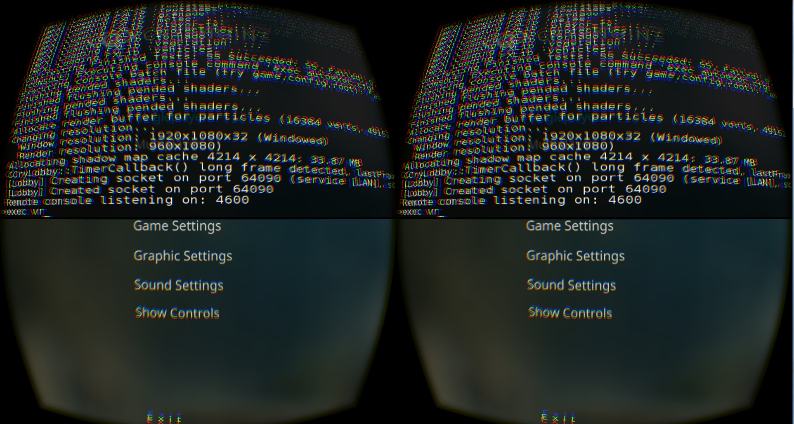
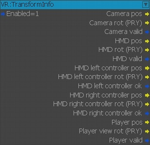
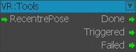
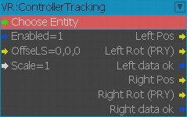
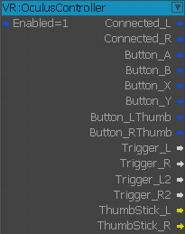
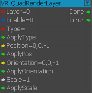
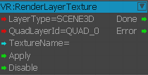

Обзор
Поддержка Oculus Rift теперь включена в CRYENGINE. Эта статья поможет вам настроить VR, а также содержит важную информацию, которую вам следует знать перед началом работы.
Главы:
Начало работы
- Драйверы: Установите самые последние версии драйверов - Доступно в Oculus. В настоящее время мы поддерживаем версию 1.3 Бета.
- Документация Окулуса: Пожалуйста, прочтите документацию по настройке и настройке устройства - Доступно в Oculus.
- Здоровье и безопасность: Пожалуйста, внимательно прочтите информацию по охране труда и технике безопасности - Доступно в Oculus.
- Видеодрайверы: обновите драйверы видеокарты и убедитесь, что вы используете самую последнюю версию, поддерживающую Oculus Rift.
- Рекомендуемые характеристики PC: Информация о требованиях к аппаратному обеспечению - Доступно в Oculus.
Для помощи в настройке вашего устройства воспользуйтесь официальным приложением Oculus и документацией по ссылке выше.
Запуск двигателя с включенным Oculus Rift (игровой режим)
Чтобы включить VR в CRYENGINE, выполните следующие действия:
- Подключите устройство к компьютеру
- Убедитесь, что среда выполнения/приложение поставщика распознает вашу гарнитуру как готовую к использованию.
- Установите плагин OculusVR, добавив следующую строку в раздел плагина вашего файла .cryproject.
{ "type": "EPluginType::Native", "path": "CryOculusVR" } - В клиенте Oculus включите Неизвестные источники.
- Добавьте 'sys_vr_support=1' в ваш файл system.cfg или user.cfg.
- Запустить движок
После запуска движок должен выполнять рендеринг на вашем головном устройстве.

Внесение изменений в уровень (режим редактирования)
Если вы хотите внести изменения в уровень, то есть отредактировать свою игру, вам необходимо отключить VR.
- Удалите все плагины VR из вашего .cryproject, например. { "type": "EPluginType::Native", "path": "CryOculusVR" }. NOTE: Сюда входят плагины VR, связанные с HMD от всех других производителей, а не только от Oculus Rift.
- Удалить sys_vr_support из вашего system.cfg или .cryproject
- Убедитесь, что все другие функции VR отключены.
При возврате в игровой режим все вышеперечисленные шаги/любые внесенные изменения должны быть отменены.
Запустите Engine от имени администратора, если вы столкнулись с ошибкой 308.
Конфигурация входа
При желании вы можете привязать это непосредственно к клавише/кнопке геймпада. Этого можно добиться через Flow Graph, используя команду Debug:InputKey узел.
Альтернативно, вы можете изменить <game_folder>\Libs\Config\DefaultProfile.xml файл и назначьте там кнопку.
См. Настройка элементов управления и карт действий для получения дополнительной информации.
Flow Graph
Мы представили некоторые элементы управления/функции, связанные с устройством HMD и контроллерами движения. Доступ к этому можно получить через Flow Graph.
- VR:TransformInfo

VR:TransformInfo узел
Обеспечивает быстрый доступ к информации о положении и вращении, связанной с устройством VR.
- VR:Инструменты

VR:Узел "Инструменты"
Позволяет подключить вход для запуска команды RecenterPose.
- VR:ControllerTracking

VR:ControllerTracking узел
Аналогично узлу VR:TransformInfo. Этот узел позволит вам получить доступ к информации о положении и вращении контроллера. Кроме того, вы можете указать значение масштабирования, а также ссылочный объект.
FlowNodes ниже зависят от устройства/платформы. Это может быть изменено (на других устройствах реализации уровня WIP), в то время как другие, например карты контроллера для конкретного устройства, являются таковыми по своей конструкции и предназначены только для конкретного устройства.
- VR:OculusController

VR:OculusController узел
Позволяет получать состояния кнопок, а также значения триггера, джойстика и жестов данного сенсорного контроллера. (Индекс обычно должен быть 0 или 1).
- VR:QuadRenderLayer

VR:QuadRenderLayer узел
Позволяет получить доступ к свойствам четырех слоев рендеринга HMD. Узел позволяет изменять положение, масштабирование и ориентацию слоя (заданного входными данными слоя) в мировом пространстве.
- VR:RenderLayerTexture

VR:RenderLayerTexture узел
Позволяет получить доступ к свойствам текстур слоя рендеринга слоя, указанного с помощью QuadLayerID.
Консольные команды и переменные, специфичные для Oculus Rift
| Имя | Тип | По умолчанию | Описание |
|---|---|---|---|
| hmd_ipd | Переменная | -1 | HMD IPD override (в метрах, с плавающей запятой) -1 – использовать значение, предоставленное системой. |
| hmd_low_persistence | Переменная | 0 | Устарело |
| hmd_dynamic_prediction | Переменная | 0 | Устарело |
| hmd_queue_ahead | Переменная | 0 | Устарело |
| hmd_projection | Переменная | 0 | Выбирает способ проецирования изображения в HMD: 0 - обычный стереоскопический режим |
| hmd_perf_hud | Переменная | 0 | Показ производительности HUD для HMD 0 - выкл. |
| hmd_projection_screen_dist | Переменная | 0 | Если >0, расстояние «киноэкрана» будет равно HMD при использовании «моноскопической (киноподобной)» проекции. Используется с Только Oculus SDK 1.2 или более поздней версии |
Возможные проблемы, с которыми вы можете столкнуться
Редактор Sandbox не запускается после включения VR.
Решение:
- Удалите все плагины VR из вашего .cryproject, например. { "type": "EPluginType::Native", "path": "CryOculusVR" }.
- Удалить sys_vr_support из вашего system.cfg или .cryproject
- Убедитесь, что все другие функции VR отключены.
Запуск редактора Sandbox с помощью user.cfg
Он попытается включить VR в режиме редактора, что он попытается, но не сможет сделать.
Решение: Переименуйте user.cfg во что-нибудь другое, например _user.cfg.
Это позволит обойти чтение файла при загрузке редактора Sandbox.
В некоторых случаях программа запуска (GameSDK.exe) загружается с черным экраном.
Игра активна в фоновом режиме, но на экране ничего визуально не отображается.
Решение: Удалите папку пользователя в корне сборки. Затем перезапустите GameSDK.exe.
В некоторых случаях программа запуска (GameSDK.exe) загружается с оранжевым экраном.
В некоторых крайних случаях при загрузке экрана может отображаться оранжевый экран с надписью «Приложение приостановлено, пока выполняется рендеринг старого приложения SDK».
Решение: Попробуйте остановить, а затем перезапустить службу Oculus через Утилита настройки Oculus (найдена под Инструменты меню).